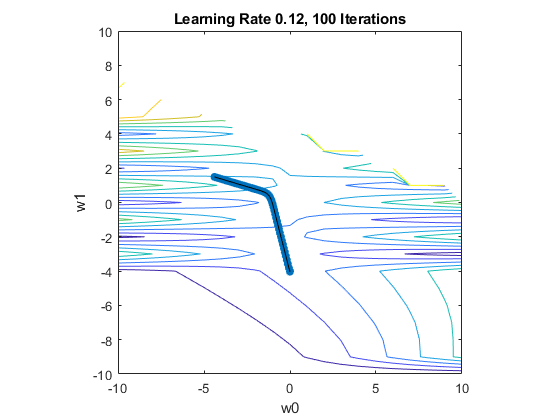

Contents
close all
clear all
warning('off', 'all')
id = 1:1:20;
hrs = [0.50, 0.75, 1.00, 1.25, 1.50, 1.75, 1.75, 2.00, 2.25, 2.50, 2.75, 3.00,...
3.25, 3.50, 4.00, 4.25, 4.50, 4.75, 5.00, 5.50];
pss = [0, 0, 0, 0, 0, 0, 1, 0, 1, 0, 1, 0, 1, 0, 1, 1, 1, 1, 1, 1];
x = hrs;
y = pss;
Part A
w0 = -4.077;
w1 = 1.5046;
for i = 1:length(hrs)
Jtemp = -1/20 * sum(pss(i) * log(1/(1 + exp(-(w0 + w1*hrs(i))))) + (1- pss(i)) * log(1 - 1/(1 + exp(-(w0 + w1*hrs(i))))));
J(i) = Jtemp;
end
for ii = 1:20
t = -10;
g = -10;
fsurf(@(x,y) -1/20 * sum(y * log(1/(1 + exp(-(t + g*x)))) + (1- y) * log(1 - 1/(1 + exp(-(t + g*x))))),[-100 100 -100 100], 'ShowContours','on')
hold on
t = t+1;
g = g+1;
end
title('fsurf plot of J')
w_m = -10:10;
w2_m = -10:10;
[X1, X2] = meshgrid(w_m, w2_m);
for i = 1:length(hrs)
Jtemp2 = -1/20 * sum(pss(i) * log(1./(1 + exp(-(X1 + X2.*hrs(i))))) + (1- pss(i)) * log(1 - 1./(1 + exp(-(X1 + X2.*hrs(i))))));
Jtemp3(i+1,:) = Jtemp2;
end
figure;
contour(X1,X2,Jtemp3)
axis([-10 10 -10 10])
axis square
xlabel('w0')
ylabel('w1')
title('Contour Plot of J')
part B
w0 = 0;
w1 = -4;
alpha = 2;
for i = 1:length(hrs)
dw0 = 1/length(hrs)*sum((-1 + y(i) + y(i) + y(i) * exp(-w0 - w1*x(i)))/(exp(-w0-w1*x(i)) + 1));
dw1 = 1/length(hrs)*sum((-x(i) * (-y(i) + 1) + y(i)*x(i)*exp(-w0-w1*(x(i))))/ (exp(-w0-w1*x(i)) + 1));
w0new = w0 - alpha*dw0;
w1new = w1 - alpha*dw1;
end
w0tot = [w0 w0new];
w1tot = [w1 w1new];
for kk = 1:19
for i = 1:length(hrs)
dw0 = 1/length(hrs)*sum((-1 + y(i) + y(i) + y(i) * exp(-w0new - w1new*x(i)))/(exp(-w0new-w1new*x(i)) + 1));
dw1 = 1/length(hrs)*sum(-(-x(i) * (-y(i) + 1) + y(i)*x(i)*exp(-w0new-w1new*(x(i))))/ (exp(-w0new-w1new*x(i)) + 1));
w0new = w0new - alpha*dw0;
w1new = w1new - alpha*dw1;
end
w0tot = [w0tot w0new];
w1tot = [w1tot w1new];
end
figure;
contour(X1,X2,Jtemp3)
axis([-10 10 -10 10])
axis square
hold on
scatter(w0tot,w1tot,'filled')
hold on
plot(w0tot,w1tot, '-k')
title('Learning Rate 2, 20 Iterations')
xlabel('w0')
ylabel('w1')
Part C
w0C = 0;
w1C = -4;
alpha = 0.12;
for i = 1:length(hrs)
dw0 = 1/length(hrs)*sum((-1 + y(i) + y(i) + y(i) * exp(-w0 - w1*x(i)))/(exp(-w0-w1*x(i)) + 1));
dw1 = 1/length(hrs)*sum((-x(i) * (-y(i) + 1) + y(i)*x(i)*exp(-w0-w1*(x(i))))/ (exp(-w0-w1*x(i)) + 1));
w0newC = w0 - alpha*dw0;
w1newC = w1 - alpha*dw1;
end
w0totC = [w0C w0newC];
w1totC = [w1C w1newC];
for kk = 1:100
for i = 1:length(hrs)
dw0 = 1/length(hrs)*sum((-1 + y(i) + y(i) + y(i) * exp(-w0newC - w1newC*x(i)))/(exp(-w0newC-w1newC*x(i)) + 1));
dw1 = 1/length(hrs)*sum(-(-x(i) * (-y(i) + 1) + y(i)*x(i)*exp(-w0newC-w1newC*(x(i))))/ (exp(-w0newC-w1newC*x(i)) + 1));
w0newC = w0newC - alpha*dw0;
w1newC = w1newC - alpha*dw1;
end
w0totC = [w0totC w0newC];
w1totC = [w1totC w1newC];
end
figure;
contour(X1,X2,Jtemp3)
axis([-10 10 -10 10])
axis square
hold on
scatter(w0totC,w1totC,'filled')
hold on
plot(w0totC,w1totC, '-k')
title('Learning Rate 0.12, 100 Iterations')
xlabel('w0')
ylabel('w1')
disp('I think there is something wrong with my equation, but even so I got close to the optimal values')
disp(w0newC)
disp(w1newC)
I think there is something wrong with my equation, but even so I got close to the optimal values
-4.4030
1.4920
